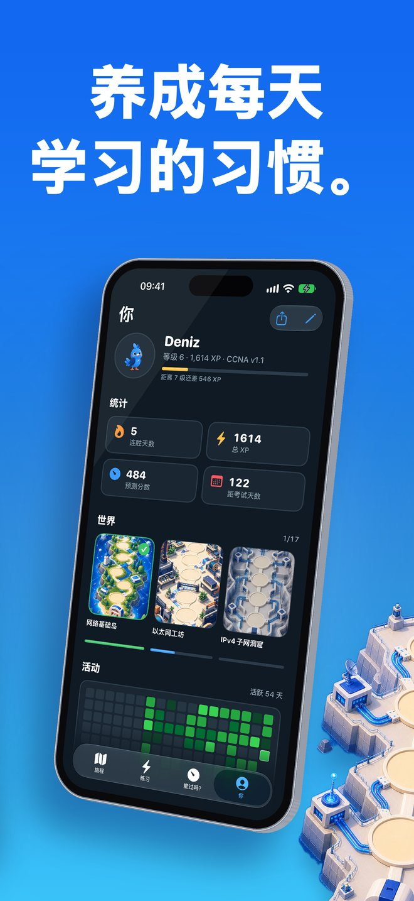

Linkwing 是什么？
从零开始，也能学会计算机网络。
Linkwing 用大白话讲网络：什么是 IP 地址，交换机和路由器有什么区别，Wi-Fi 是怎么连上的。一只蓝色的小玄凤鹦鹉 Kavi 带你飞过一张手绘插画地图，每天几分钟，一站一站学下去。想考 CCNA 200-301 的话，同一条路线会继续通向备考。
截图

适合谁
- 完全没有基础、想入门网络的人
- 想转行做网络或运维的人
- 计算机、信息技术专业的学生
- 正在准备 CCNA 200-301 的考生
先从零开始
- 17 节简短课程，分成“网络基础”和“办公室网络是怎么搭起来的”两个世界
- 从网络是什么、客户端与服务器，到交换机、路由器、防火墙、局域网与广域网、IP 与 MAC 地址、网线与光纤、Wi-Fi、VLAN、RAID 和备份
- 全是日常比喻和原生绘制的图示，点一下高亮的词就能看到通俗解释
- 每节课末尾有几道简单小测，连错误选项也会告诉你为什么错
怎么学
- 先告诉 Linkwing 你的水平。完全零基础，就从第一课开始
- 已经懂一些？做一次 5 道题的自适应小测，已经会的部分自动跳过
- 沿着地图前进，Kavi 从一站飞到下一站
- 用连胜、经验值、徽章和每日任务，把每天学一点变成习惯
老实备考 CCNA 200-301
- 15 个考试世界：网络基础、以太网、IPv4 与子网划分、IPv6、VLAN 与中继、生成树、静态路由与 OSPF、DHCP/DNS/NAT 等网络服务、安全、无线、自动化、故障排查，最后是考试顶峰
- 1,100+ 道原创考试风格题目，含看图题、多选题、排序题、配对题和计算题。题目均为原创，不是考试原题
- 75 个 IOS 命令实验：亲手输入真实命令，缩写也能识别
- 子网划分训练馆：随时生成新的练习
- 900+ 张间隔重复闪卡
- 按考试大纲权重出题的限时模考
- 支持 CCNA 200-301 v1.1，以及 2027 年 2 月 3 日起的 v2.0
- “我能通过吗？”只有在你首次作答 40 道题之后才给出预测分数，满分 1000。数据不够时，宁可不给数字，也不编一个好看的
- 考试日预测：按你每天的学习时长估算何时准备就绪，并显示分数走势
无需注册，可离线学习
- 不用创建账号，打开就能学
- 没有网络也能用，地铁上、飞机上都行
- 界面支持 8 种语言：简体中文、英语、西班牙语、葡萄牙语、日语、韩语、阿拉伯语、土耳其语，应用内可随时切换
入门课程为简体中文；考试级课程的标题和摘要为中文、正文为英文；考试题目和 IOS 命令实验为英文。
免费开始
Linkwing 可免费下载并开始学习。Linkwing Pro 是可选的自动续期订阅，用于解锁更多内容。付款将从你的 Apple 账户扣除；除非在当前订阅期结束前至少 24 小时取消，否则订阅将自动续订，你可以在 Apple 账户设置中管理或取消订阅。
常见问题
Linkwing 是什么？
Linkwing 是一款 iPhone 应用，帮助你从零开始学习计算机网络，并备考 Cisco CCNA 200-301 考试。它包含 2 个世界共 17 节入门课程、由蓝色玄凤鹦鹉 Kavi 带路的 15 个考试世界插画地图、1,136 道原创考试风格题目、929 张闪卡、75 个 IOS 命令实验、子网划分训练馆和限时模考。需要 iOS 26 或更高版本，开发者为 Ata Tunc Bilge。
Linkwing 免费吗？
Linkwing 可免费下载并开始学习。Linkwing Pro 是可选的自动续期订阅，用于解锁完整课程，可在 Apple 账户设置中管理或取消。
题目是 CCNA 考试真题吗？
不是。Linkwing 的所有题目都是按考试风格原创编写的，不是考试原题，也不是泄露的题库。目的是让你真正理解知识点，而不是背答案。
支持 CCNA v2.0 吗？
支持。Linkwing 同时覆盖 CCNA 200-301 v1.1（适用于 2027 年 2 月 2 日及之前的考试）和 v2.0（自 2027 年 2 月 3 日起），并根据你的考试日期选择对应大纲。具体细节请以 Cisco 官方考试大纲页面为准。
有中文吗？可以离线用吗？
有。应用界面支持包括简体中文在内的 8 种语言，可在应用内随时切换。17 节入门课程已完整翻译成简体中文，包括图示说明和 60 个点一下就能看解释的术语。考试级课程的标题和摘要为中文，正文为英文。考试风格题目和 IOS 命令实验为英文，因为 CCNA 考试以英语和日语提供。Linkwing 无需注册账号，没有网络也能学习。